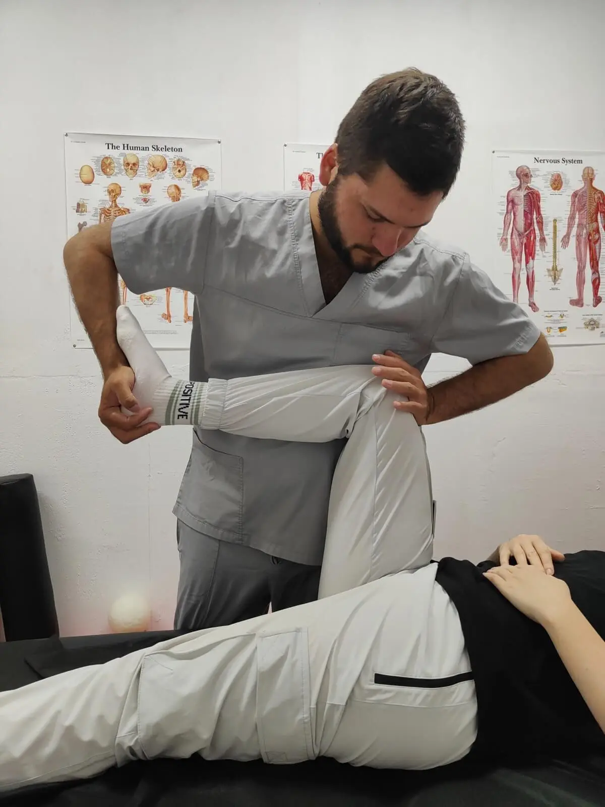

Іван Євстратов
Фізичний терапевт
Закінчив Національний університет фізичного виховання і спорту України за спеціальністю «Фізична терапія та ерготерапія». Працював у реабілітаційних центрах і клініках амбулаторно та в стаціонарі.
Команда
Recovery Line by Yevstratovi спеціалізується на ортопедичній реабілітації, відновленні після травм і операцій, роботі з болем у спині, шиї та суглобах.
Фахівці
Команда поєднує досвід амбулаторної та стаціонарної реабілітації, мануальних технік, масажу й індивідуальних вправ.
Фізичний терапевт
Закінчив Національний університет фізичного виховання і спорту України за спеціальністю «Фізична терапія та ерготерапія». Працював у реабілітаційних центрах і клініках амбулаторно та в стаціонарі.
Фізична терапевтка
Навчалася за напрямом лікарської справи та закінчила Одеський медичний інститут Міжнародного гуманітарного університету за спеціальністю «Фізична терапія та ерготерапія». Має досвід роботи в медичних і реабілітаційних центрах.
Фізичний терапевт, лікар-невролог на інтернатурі
Закінчив Запорізький державний медико-фармацевтичний університет за спеціальністю «Медицина». Працює з болем у спині, шиї та суглобах, наслідками травм, порушеннями постави та м'язовими дисфункціями.

Спеціалізація
Проводимо консультації, відновлюємо після операцій опорно-рухового апарату та тривалої іммобілізації, розробляємо контрактури й працюємо з наслідками бойових травм.
Командна робота
Ми працюємо як команда: обмінюємося досвідом, аналізуємо клінічні випадки, навчаємося та шукаємо рішення, які підходять конкретній людині, а не абстрактному діагнозу.
Оцінка стану, функціональна діагностика та зрозумілий план дій.
Лікувальна фізкультура, стречинг, тренажери, стабілізація та силові вправи.
Корекція суглобової біомеханіки класичними й сучасними техніками.
Підтримка відновлення тканин, зменшення напруги та робота з локальними задачами.
Опишіть симптоми й ціль відновлення, щоб ми підібрали відповідний формат прийому.